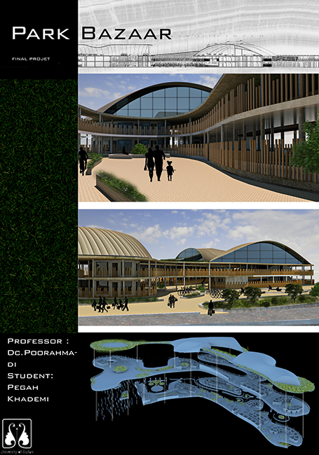
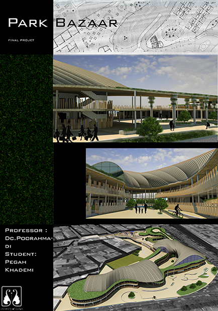

The idea of park bazaar came to me when I saw how people like to shop in their traditional bazaar
and they do not have a lot of commercial complexes in Rasht and the site that I chose was a temporary
place to sell fruits and vegtebles and also a plain ground which children play football there so I though
to combine them and design a park bazaar which provide with these two options and alot of more options to use
the site more efficient.
▾


The concept of this project was inspired by Meta balls , In computer
graphics, metaballs are organic-looking n-dimensional isosurfaces, characterised by
their ability to meld together when in close proximity to create single, contiguous objects.
by this concept I tried to provide the organic sense of Rasht bazaar in my project.
▾